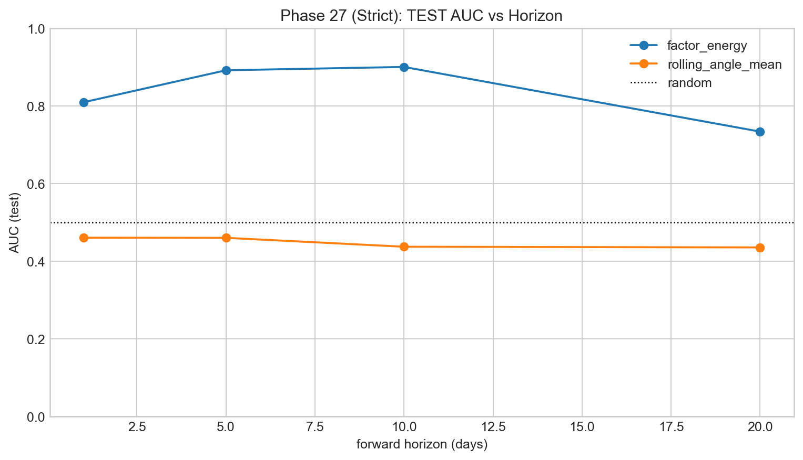

Predictive Power Strict
Entry: this is the strict-causality version, where I care more about timing integrity than pretty in-sample fit.
I upgraded this phase to strict forward targets and walk-forward PCA construction so every date only uses information available up to that date. Event thresholds are fit on train only and then applied to test. This makes the numbers less flattering in some places, but much more honest.
What survived strict setup
Event classification stayed strong for factor energy, peaking around AUC 0.90 at 10-day horizon in test metrics. Magnitude regression did not survive in linear OOS form; test R² is weak/negative. I consider that a useful boundary, not a failure: event ranking is strong, exact magnitude prediction is hard.



Metrics I wrote down from the report files
- aligned rows around 5,081 in strict predictive dataset
- best strict AUC test ≈ 0.9007 (factor energy, 10-day)
- best strict test R² ≈ -0.313 (linear magnitude fit remains weak)
- train/test event shares differ, so I avoid naive threshold transfer assumptions
How I interpret this without over-selling
This model is better at saying “risk event likelihood is high” than “exact forward volatility number will be X.” For deployment framing, that means risk triage and alerting look stronger than pure point-forecasting claims.
Shared reference
Dictionary: same terminology map used in every page.